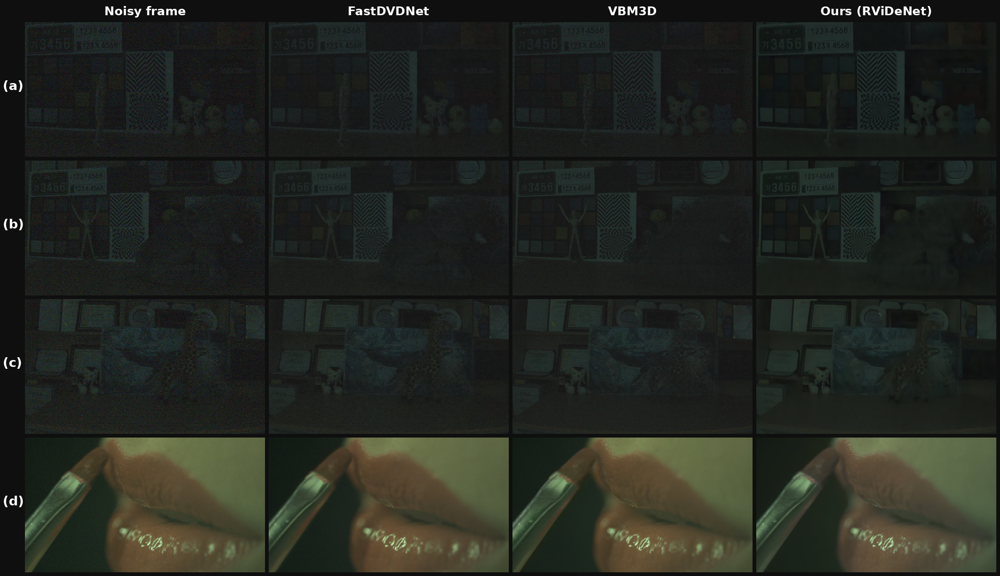
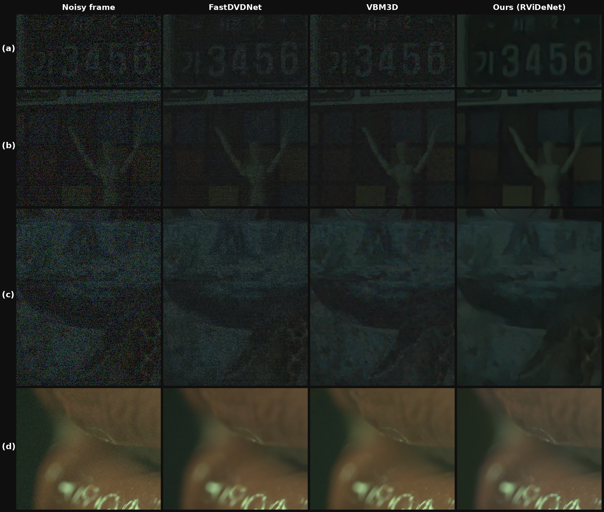

Evaluation
Benchmarked on a self-captured 0.1 lux IMX327 RAW validation set and on ReCRVD (external generalization), against Noisy, VBM3D and FastDVDNet. Because methods output different domains, everything is compared after an identical RAW→PNG visualization (linear gain + gamma).
How we measure
Evaluation is split into a RAW-domain pass (how much noise the model actually removes in RAW) and a PNG-domain pass (perceived quality after visualization).
RAW-domain evaluation
Comparing the noisy input against RViDeNet-ECBAM directly in RAW. On both datasets, PSNR and SSIM improve substantially.
| Dataset | Method | Scenes | PSNRraw | SSIMraw |
|---|---|---|---|---|
| Self-captured 0.1 lux | Noisy | 6 | 45.026 | 0.9537 |
| Self-captured 0.1 lux | RViDeNet | 6 | 57.056 | 0.9958 |
| ReCRVD | Noisy | 10 | 21.805 | 0.6927 |
| ReCRVD | RViDeNet | 10 | 39.331 | 0.9782 |
PNG-domain evaluation
Under the shared RAW→PNG visualization, the best method depends on the dataset. On the self-captured set RViDeNet-ECBAM leads on PSNR, SSIM and tOF; on ReCRVD, VBM3D (σ=20) gives the highest PSNR while RViDeNet-ECBAM gives the best LPIPS. Rows are sorted by PSNR within each dataset.
| Dataset | Method | Variant | PSNR | SSIM | LPIPS | tOF | tLPIPS |
|---|---|---|---|---|---|---|---|
| Self-captured | RViDeNet | – | 31.573 | 0.648 | 0.555 | 0.293 | 0.090 |
| Self-captured | VBM3D | σ=30 | 30.968 | 0.629 | 0.771 | 0.326 | 0.079 |
| Self-captured | VBM3D | σ=50 | 30.840 | 0.621 | 0.810 | 0.285 | 0.022 |
| Self-captured | FastDVDNet | – | 30.224 | 0.578 | 0.753 | 1.165 | 0.212 |
| Self-captured | VBM3D | σ=40 | 30.192 | 0.624 | 0.793 | 0.288 | 0.031 |
| Self-captured | VBM3D | σ=20 | 29.110 | 0.535 | 0.403 | 1.108 | 0.210 |
| Self-captured | Noisy | – | 22.018 | 0.215 | 0.425 | 2.428 | 0.133 |
| ReCRVD | VBM3D | σ=20 | 36.919 | 0.915 | 0.229 | 1.263 | 0.156 |
| ReCRVD | VBM3D | σ=30 | 36.349 | 0.929 | 0.231 | 1.411 | 0.130 |
| ReCRVD | FastDVDNet | – | 35.948 | 0.916 | 0.206 | 1.737 | 0.148 |
| ReCRVD | VBM3D | σ=40 | 35.678 | 0.922 | 0.253 | 1.645 | 0.126 |
| ReCRVD | VBM3D | σ=50 | 34.966 | 0.915 | 0.270 | 1.821 | 0.123 |
| ReCRVD | RViDeNet | – | 34.546 | 0.918 | 0.176 | 1.165 | 0.149 |
| ReCRVD | Noisy | – | 28.916 | 0.537 | 0.613 | 3.476 | 0.219 |
Best PSNR / lowest LPIPS / lowest tOF per dataset highlighted. tOF & tLPIPS measure temporal stability (lower is better).
On the self-captured set, RViDeNet's LPIPS (0.555) is higher than VBM3D σ=20 (0.403) — even above the noisy input (0.425). Strong denoising over-smooths high-frequency texture, and perceptual metrics treat residual noise as a kind of texture while penalising the missing detail of a smoothed result. We address this with alpha blending below.
Scene-by-scene (PNG)
Each cell shows Noisy → RViDeNet with the change (Δ). PSNR/SSIM higher is better; LPIPS/tOF/tLPIPS lower is better.
Self-captured 0.1 lux set
| Scene | PSNR Δ | SSIM Δ | LPIPS Δ | tOF Δ | tLPIPS Δ |
|---|---|---|---|---|---|
| whiteball | +9.76 | +0.444 | +0.154 | −2.296 | −0.040 |
| wood | +8.73 | +0.388 | +0.169 | −2.024 | −0.042 |
| snake | +9.28 | +0.420 | +0.091 | −1.936 | −0.054 |
| elephant | +9.11 | +0.407 | +0.153 | −2.159 | −0.037 |
| giraffe | +10.63 | +0.490 | +0.053 | −2.073 | −0.054 |
| pink | +9.86 | +0.448 | +0.161 | −2.302 | −0.032 |
Consistent PSNR +8.7–+10.6 dB and SSIM +0.39–+0.49 on every scene, with tOF dropping ~2.0 (large temporal-consistency gain). LPIPS rises slightly, reflecting texture loss from strong denoising.
ReCRVD (external)
| Scene | PSNR Δ | SSIM Δ | LPIPS Δ | tOF Δ | tLPIPS Δ |
|---|---|---|---|---|---|
| Beauty | +9.16 | +0.661 | −0.656 | −3.041 | −0.048 |
| Lips | +4.61 | +0.332 | −0.190 | −1.023 | −0.100 |
| SunBath | +9.28 | +0.495 | −0.608 | −7.679 | −0.035 |
| boxing | −0.83 | +0.110 | −0.122 | −0.127 | −0.048 |
| breakdance | +9.47 | +0.595 | −0.820 | −1.941 | −0.107 |
| camel | +4.94 | +0.324 | −0.398 | −0.890 | −0.086 |
| dogs-jump | +9.10 | +0.531 | −0.684 | −2.518 | −0.080 |
| parkour | +7.59 | +0.375 | −0.447 | −3.633 | −0.100 |
| rollerblade | +1.03 | +0.223 | −0.283 | −1.437 | −0.059 |
| vietnam | +1.96 | +0.159 | −0.163 | −0.827 | −0.039 |
Every scene except boxing improves on PSNR, and LPIPS / tOF / tLPIPS improve on all scenes. boxing already starts at 34.4 dB noisy (a slight −0.83 PSNR drop, all other metrics improve). SunBath and parkour show the largest temporal gains (tOF −7.68 / −3.63).
What it looks like
Noisy input is dominated by low-light noise that buries object boundaries. FastDVDNet softens noise but stays dark and blurry. VBM3D is stable on static backgrounds but turns moving objects translucent where it cannot compensate motion. RViDeNet-ECBAM gives the most stable visual quality across full frames and crops — recovering number plates, doll contours and lip boundaries — though some background texture is flattened by smoothing.



Alpha blending
To soften the over-smoothing seen in PNG LPIPS, we blend the RViDeNet output with the original noisy input:
Larger α favours the denoised result; smaller α keeps more of the noisy input's texture (and noise). At α=1.0 the denoising is strongest; α=0.7–0.9 sit between noise removal and texture preservation, letting us pick a point on that trade-off. This was an addition beyond the initial plan, driven by the observed texture loss.
Does denoising help detection?
We run a YOLOv11x detector on the self-captured set. Without detection GT annotations, this is a proxy study (not mAP): average detections per frame, average mean confidence, and the detected-frame ratio (fraction of frames with at least one detection).
| Method | Avg Det / Frame | Avg Mean Conf | Detected Frame Ratio |
|---|---|---|---|
| RViDeNet | 1.64 | 0.346 | 0.726 |
| VBM3D σ=40 | 1.23 | 0.307 | 0.647 |
| VBM3D σ=30 | 1.21 | 0.311 | 0.647 |
| VBM3D σ=50 | 1.01 | 0.242 | 0.497 |
| FastDVDNet | 0.79 | 0.211 | 0.498 |
| VBM3D σ=20 | 0.63 | 0.194 | 0.444 |
| Noisy | 0.016 | 0.0066 | 0.016 |
On noisy input, detection is essentially impossible (≤0.016 on all three). RViDeNet leads every method — even VBM3D σ=30/40, which scored higher on PSNR/SSIM — showing pixel-level fidelity and real detectability do not always coincide.
Qualitatively, on a frame where the noisy input yields zero detections, the RViDeNet output yields five (including the giraffe). Denoising extends beyond image quality into downstream computer-vision usability.
Detections on noisy vs. denoised video
The same YOLOv11x detector run on the noisy input and on our output, with boxes drawn on each, playing side by side. Watch both at once: the noisy stream barely registers a detection, while the denoised stream picks up objects consistently.